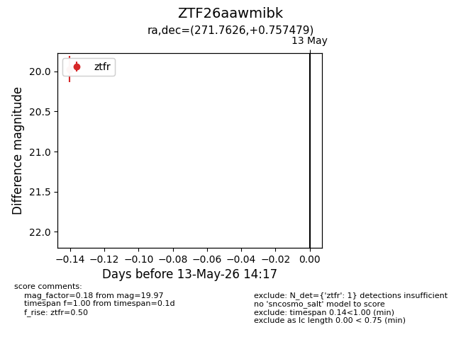
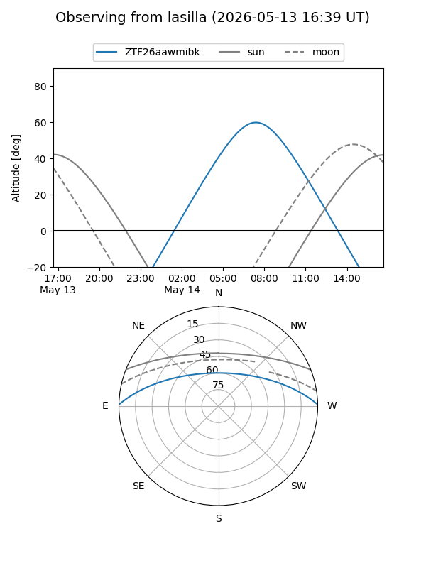
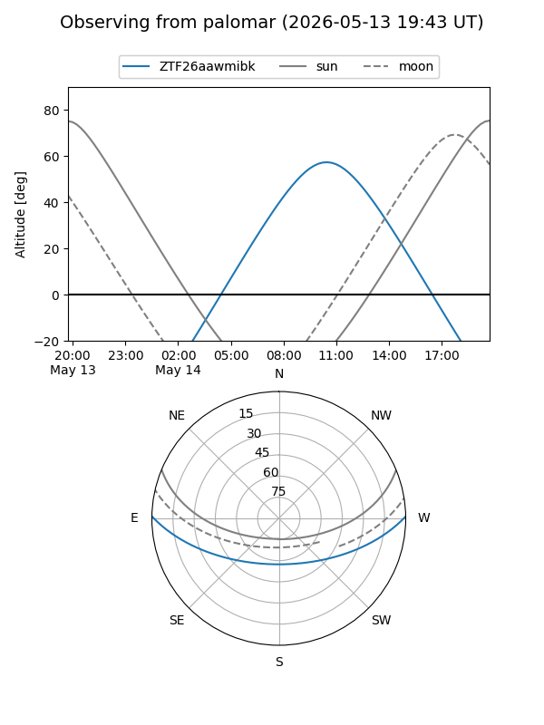

ZTF26aawmibk
Target ZTF26aawmibk at 2026-05-13 14:19
Aliases and brokers:
FINK: link
Lasair: link
ALeRCE: link
alt names
ZTF26aawmibk (ztf,fink_ztf)
Coordinates:
equatorial (ra, dec) = 271.7626,+0.75748
equatorial (HMS+DMS) = 18:07:03.02,+00:45:26.92
galactic (l, b) = (28.5036,+10.21302)
Flags:
Photometry:
last ztfr=19.97
1 ztfr detections
Lightcurve

Visibility


Additional plots